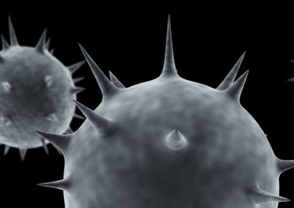

Smart Viruses
Precisely targeted cancer therapy
Vanessa Fan
Spring 2005

When you hear someone mention “viruses,” you probably think of illness,
infection, or the common cold. What you probably do not realize is the
utilization of viruses in drug therapy.
Current drug treatments impact a patient’s entire
body. Researchers are striving to develop drug implementation methods
that will specifically target diseased cells, which will not only make
drugs more effective, but also reduce any adverse side effects that may
result.
Viruses are surrounded by protective coats of
protein called capsids, which are the center of many studies in the
growing area of drug transport research. They travel quickly within a
body and have the ability to protect their own genetic cargo. If
manipulated correctly, viral capsids can ensure that drug molecules
reach the site of a tumor undamaged.
The Francis research group at the University of
California, Berkeley, led by Matt Francis, Ph.D., is taking part in the
movement towards improving drug therapies, particularly in the area of
cancer treatment. Their objective is to empty out viral capsids and
then refill their shells with drug molecules. The altered form of the
virus can then transport its cargo directly to a tumor site where the
molecules are released into the body.
The Francis group’s research focuses on the use of
the MS2 viral capsids to deliver medication. Dr. Francis considers this
virus “one of the better candidates due to its structure and robust
character.” Graduate student Ernest Kovacs says, “Since the MS2 virus
affects a particular strain of E. coli bacteria, it can be easily
harvested in large quantities.” This provides an almost unlimited
supply of viral capsids for testing. A Ph.D. candidate in Organic
Chemistry, Jacob Hooker adds, “the symmetrical assembly of the MS2
shell leaves pores that allow access to the interior surface for drug
molecule attachment.” The outer structure of the capsid also allows for
the addition of polymer chains that, after entering the body, direct
the capsids to target specific cells.
The stepwise process by which the research group
modifies the interior of an MS2 virus capsid to insert anti-cancer drug
molecules begins by exposing it to highly alkaline conditions for a
period of two hours to degrade viral DNA. Next, a solution of dissolved
anticancer drug molecules is added to a solution containing the empty
viral capsids. Due to reaction selectivity, when the two solutions are
combined, the drug molecules attach themselves onto the interior
surface of the capsids. Once the capsids reach cancer cells at a tumor
site, the drop in cell pH conditions triggers the release of the drug
molecules.
Simply using a virus shell as a drug carrier
disregards one of the most important aspects of our bodies—our immune
system. Once a virus enters the body, the immune system immediately
detects and inactivates it. This greatly hinders the action of the
viral capsid as a drug carrier since it may be stopped before it
reaches its destination. To prevent detection by the immune system, the
Francis group has attached polymer chains with specific ligands around
the outer surfaces of the viruses, creating a dense surface coating
that facilitates immune evasion. The team has generated appropriate
antibodies to conduct testing of the altered viral capsids, which have
successfully evaded detection so far.
Is there now a chance that a deadly “drug virus
mutant” can develop that possesses an ability to dodge the immune
system? “The polymers that are being attached to the capsids to make
them undetectable by the immune system are synthetic,” says Dr.
Francis. “If some genetic material were left behind, the virus would
only replicate itself, not the polymers.” For now, it seems that
altering viral capsids for drug transportation has no foreseen dangers.
Since current research on viral drug therapy is
still in its preliminary stages, it is not yet known what side effects
this new type of treatment will have. Dr. Francis predicts that
“overall, drug delivery vehicles such as these could lower side effects
in cancer treatment.” Since the body should have no immune response to
the altered virus capsids and the medication delivery is site-specific
to tumor cells, cancer patients may no longer suffer unnecessary side
effects as a result of their drug treatments.
Kovacs believes that the group’s research of the MS2
virus as a drug carrier “is reasonably close to entering the next stage
involving testing in animals.” If the testing is successful, it will
most likely open up other possibilities in biomedical research.
The outlook is bright for significant improvements
in cancer drug treatments and other areas of drug therapy. MS2 virus
drug delivery research has yielded a better understanding of the
processes by which viral capsids are assembled. This will allow us to
utilize viral capsids in drug therapy and various other areas of
medical treatment as well.